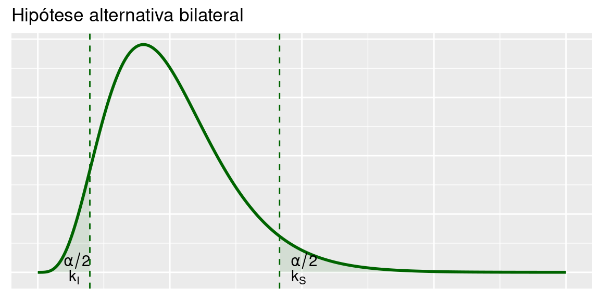
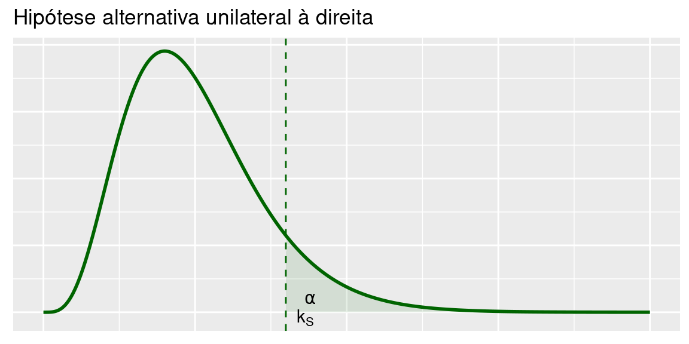
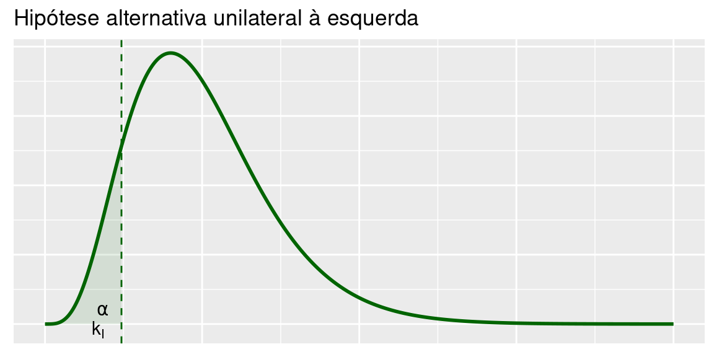

Capítulo 8 Teste de Hipótese: Proporções
Já aprendemos a construir testes de hipóteses sobre a média de uma população normal com variância \(\sigma^2\) conhecida. O procedimento baseou-se na distribuição amostral da média amostral que, com as hipóteses de normalidade e conhecimento da variância populacional, sabemos ser normal com a mesma média e variância \(\frac{\sigma^2}{n}\). Agora, iremos fazer uso do Teorema Limite Central para construir testes de hipóteses sobre proporções com base em amostras grandes. Vimos que, para amostras grandes, a distribuição amostral da proporção amostral pode ser aproximada por uma distribuição normal e, assim, o procedimento de teste de hipótese será idêntico ao estudado sobre a média de uma população normal com variância \(\sigma^2\) conhecida.
8.1 Contexto básico
O contexto de interesse é o seguinte: temos uma população em que cada elemento é classificado de acordo com a presença ou ausência de determinada característica. Em termos de variável aleatória, essa população é representada por uma v.a. de Bernoulli, isto é:
\[ X=\begin{cases} 1,\text{ se elemento possui característica de interesse}\\ 0,\text{ se elemento não possui característica de interesse} \end{cases} \]
Então, \(P(X = 1) = p\), \(E(X) = p\) e \(V(X) = p(1-p)\). O parâmetro \(p\) é também a proporção de elementos da população que possuem a caracterísitca de interesse. Em geral, esse parâmetro é desconhecido e queremos testar hipóteses feitas sobre seu possível valor.
Suponha, então, que dessa população seja extraída uma amostra aleatória simples \(X_1,\ldots,X_n\) com reposição. Vimos que a proporção \(\hat P\) de elementos na amostra que possuem a característica de interesse, definida por
\[\hat P = \frac{S_n}{n} = \frac{X_1+X_2+\ldots+X_n}{n}\]
é um estimador não-viesado para \(p\) com variância \(\frac{p(1-p)}{n}\). Mais precisamente,
\[E(\hat P)=p\]
\[V(\hat P)=\frac{p(1-p)}{n}\]
Como a proporção amostral é uma média de uma amostra aleatória simples de uma população com distribuição de Bernoulli com parâmetro \(p\), o Teorema Central do Limite nos diz, então, que a distribuição de \(\hat P\) se aproxima de uma nornal com média \(p\) e variância \(\frac{p(1-p)}{n}\).
Resumindo, temos o seguinte resultado:
\[\hat P \approx N\left(p,\frac{p(1-p)}{n}\right)\]
ou, equivalentemente,
\[\frac{\hat P-p}{\sqrt{\frac{p(1-p)}{n}}}\approx N(0,1)\]
Vamos ver, agora, como usar esse resultado para construir testes de hipóteses sobre a verdadeira proporção populacional \(p\).
8.2 Teste de hipóteses sobre proporções
A hipótese nula que consideraremos será uma hipótese simples:
\[H_0:p=p_0\]
As hipóteses alternativas possíveis são
- Bilateral: \(H_1:p\neq p_0\)
- Unilateral à direita: \(H_1:p > p_0\)
- Unilateral à esquerda: \(H_1:p < p_0\)
Como no caso da média, a escolha das hipóteses nula e alternativa deve ser feita levando-se em conta que a hipótese nula deve ser uma hipótese simples. Assim, você deve “traduzir” a situação de interesse do problema em desigualdades envolvendo a proporção \(p\). A hipótese alternativa é a desigualdade que não inclui o sinal de \(=\). A estatística de teste é
\[Z=\frac{\hat P-p}{\sqrt{\frac{p(1-p)}{n}}}\approx N(0,1)\] Dado um nível de significância \(\alpha\), a região crítica é definida como o conjunto de valores da estatísttca de teste que têm probabilidade pequena de ocorrerem sob a veracidade da hipótese nula. Assim, a região crítica é definida como o conjunto de valores de
\[Z_0=\frac{\hat P-p_0}{\sqrt{\frac{p_0(1-p_0)}{n}}}\approx N(0,1)\]
com pequena probabilidade de ocorrência. Como estamos exatamente no mesmo procedimento de teste de hipótese será idêntico ao estudado sobre a média de uma população normal com variância \(\sigma^2\) conhecida,
- \(Z_0 < -Z_\frac{\alpha}{2}\) ou \(Z_0>Z_\frac{\alpha}{2}\) (teste bilateral)
- \(Z_0 > z_\alpha\) (teste unilateral à direita)
- \(Z_0 < -z_\alpha\) (teste unilateral à esquerda)
ou
- \(\hat P < p_0-Z_\frac{\alpha}{2}\sqrt{\frac{p_0(1-p_0)}{n}}\) ou \(\hat P > p_0+Z_\frac{\alpha}{2}\sqrt{\frac{p_0(1-p_0)}{n}}\) (teste bilateral)
- \(\hat P > p_0+Z_\alpha\sqrt{\frac{p_0(1-p_0)}{n}}\) (teste unilateral à direita)
- \(\hat P < p_0-Z_\alpha\sqrt{\frac{p_0(1-p_0)}{n}}\) (teste unilateral à direita)
8.3 Valor p
Como já visto, o valor P é a probabilidade de se obter um valor tão ou mais extremo (na direção da hipótese alternativa) que o valor observado da estatística de teste. Denotando por \(Z_0\) o valor observado da estatística de teste, temos as seguintes possibilidades:
- \(\text{p-valor}=2\times P(Z>|Z_0|)\) (teste bilateral)
- \(\text{p-valor}= P(Z>|Z_0|)\) (teste unilateral à direita ou à esquerda)
Valores pequenos de \(\text{p-valor}\) indicam que o valor observado é pouco provável de ocorrer sob a hipótese nula; logo, valores pequenos de \(\text{p-valor}\) levam à rejeição da hipótese nula. A hipótese nula é rejeitada a qualquer nível de significância \(\alpha \geq \text{p-valor}\).
8.4 Exemplo 2
Uma amostra de 64 elementos é usada para testar
\[ \begin{cases} H_0:p=0,35 \\ H_1:p\neq 0,35 \end{cases} \]
Estabeleça a região crítica para o nível de significância de 1%. Se a proporção amostral para esta amostra é \(\hat P = 0,26\), calcule o \(\text{p-valor}\).
Com \(\alpha=0,01\) e um teste bilateral, resulta que \(z_{0,005}=2,59\). A estatística de teste é
\[Z_0=\frac{0,26-0,35}{\sqrt{\frac{0,35\times 0,65}{64}}}=-1,51\]
e a região crítica é
\[Z_0<-2,59~~~~\text{ou}~~~~Z_0>2,59\]
Como o teste é bilateral, o \(\text{p-valor}\) é calculado como
\[ \begin{aligned} \text{p-valor} &= 2\times P(Z>|-1,51|) \\ &= 2\times 0,0655\\ &= 0,131 \end{aligned} \]
Como o \(\text{p-valor}\) é grande, não se rejeita a hipótese nula, ou seja, a probabilidade de se obter um valor tão extremo quanto o observado é alta, se \(H_0\) for verdadeira. A hipótese nula só seria rejeitada para níveis de significância maiores que 13,1%.
8.5 Teste de Hipótese: variância da \(N(\mu,\sigma^2)\)
Agora completaremos o estudo de teste de hipótese sobre parâmetros de uma população, analisando o caso da variância de uma população normal. Assim como na construção de intervalos de confiança, nossa estatística de teste tem distribuição qui-quadrado e a região crítica, como antes, será formada pelos valores pouco prováveis desta estatística de teste sob a hipótese nula.
8.5.1 Contexto básico
Considere uma população descrita por uma variável aleatória normal com média \(\mu\) e variância \(\sigma^2: X\sim N(\mu; \sigma^2)\). Nosso interesse é testar hipóteses sobre a a variância \(\sigma^2\) a partir de uma amostra aleatória simples \(X_1, X_2,\ldots, X_n\). Como visto anteriormente, a estatística
\[\chi^2=\frac{(n-1)S^2}{\sigma^2}\]
tem distribuição qui-quadrado com \(n-1\) graus de liberdade.
De posse desta estatística de teste, o procedimento de construção do teste é idêntico ao visto nos últimos capítulos: identificadas a hipótese nula (sempre na forma de uma hipótese simples \(\sigma^2=\sigma^2_0\)) e a hipótese alternativa, a região crítica é formada pelos valores da estatística de teste pouco prováveis sob \(H_0\). O nível de significância e o tipo de hipótese alternativa permitem a identificação precisa do que são “valores pouco prováveis”: são valores na(s) cauda(s) da distribuição de \(\chi^2\) quando a hipótese nula é verdadeira.
Vamos formalizar o procedimento geral e em seguida apresentaremos alguns exemplos de aplicação.
8.5.2 Procedimento geral para construção do teste de hipótese sobre a variância de uma \(N(\mu,\sigma^2)\)
Seja \(X_1, X_2,\ldots, X_n\) uma amostra aleatória simples de uma população \(X\) cuja distribuição é \(N(\mu,\sigma^2)\). Nosso interesse é testar alguma hipótese sobre a variância \(\sigma^2\), que é estimada por
\[S^2=\frac{1}{n-1}\sum_{i=1}^n(X_i-\bar X)^2\]
Lembre-se que \(S^2\) é um estimador não-viesado de \(\sigma^2\).
8.5.2.1 Hipótese nula e hipótese alternativa
A hipótese nula que iremos considerar será
\[H_0:\sigma^2=\sigma^2_0\]
As possíveis formas da hipótese alternativa são:
- Bilateral: \(H_1:\sigma^2\neq \sigma^2_0\)
- Unilateral à direita: \(H_1:\sigma^2 > \sigma^2_0\)
- Unilateral à esquerda: \(H_1:\sigma^2 < \sigma^2_0\)
8.5.2.2 Estatística de teste, erros, regra de decisão
Como o teste é sobre a variância de uma população normal, a estatística amostral a ser utilizada é
\[\frac{(n-1)S^2}{\sigma^2}\sim \chi^2_{n-1}\]
O procedimento de decisão é definido em termos da hipótese nula \(H_0\) e as decisões possíveis são (i) rejeitar ou (ii) não rejeitar \(H_0\). Conforme já visto, existem duas possibilidades de erro:
- Erro tipo I: rejeitar \(H_0\) quando \(H_0\) é verdadeira
- Erro tipo II: não rejeitar \(H_0\) quando \(H_0\) é falsa
A regra de decisão consiste em definir a região crítica RC como o conjunto de valores cuja probabilidade de ocorrência é pequena sob a hipótese de veracidade de \(H_0\). Logo, nossa regra de decisão se baseia na estatística de teste
\[X_0=\frac{(n-1)S^2}{\sigma^2_0}\sim \chi^2_{n-1}\]
Os valores com pequena probabilidade de ocorrência estão nas caudas da distribuição. Assim, a região crítica para cada tipo de hipótese alternativa é definida como segue:
- \(X_0<k_I\) ou \(X^2_0>k_S\) (teste bilateral)
- \(X_0>k_S\) (teste unilateral à direita)
- \(X_0<k_I\) (teste unilateral à esquerda)
8.5.2.3 Nível de significância e região crítica
O procedimento usual de teste de hipótese consiste em se fixar o nível de significância \(\alpha\), que, por definição, é a probabilidade do erro tipo I:
\[\alpha=P(\text{erro tipo I})=(\text{rejeitar }H_0|H_0~\text{é verdadeira})\]
Assim, para cada tipo de hipótese alternativa a região crítica é identificada impondo-se a condição
\[P(X_0 \in RC|H_0~\text{é verdadeira})=\alpha\]
A região crítica é calculada como:
\[P\left[X_0<k_I|X_0\sim\chi^2_{n-1}\right]+P\left[X_0>k_S|X_0\sim\chi^2_{n-1}\right]=\alpha\]
Mesmo a distribuição qui-quadrado não sendo simétrica, é prática usual dividir a probabilidade de erro em partes iguais, ou seja, os limites da região crítica são definidos de modo que
- \(P\left[X_0<k_I|X_0\sim\chi^2_{n-1}\right]=\frac{\alpha}{2}\)
- \(P\left[X_0>k_S|X_0\sim\chi^2_{n-1}\right]=\frac{\alpha}{2}\)



Usando a notação \(\chi^2_{n,\alpha}\) para denotar a abscissa da distribuição qui-quadrado com \(n\) graus de liberdade que deixa área (probabilidade) \(\alpha\) acima dela, resulta a seguinte região crítica para o teste bilateral:
\[X_0<\chi^2_{n-1,1-\frac{\alpha}{2}}~~~~\text{ou}~~~~X_0>\chi^2_{n-1,\frac{\alpha}{2}}\]
ou também,
\[S^2<\frac{n-1}{\sigma^2_0}\chi^2_{n-1,1-\frac{\alpha}{2}}~~~~\text{ou}~~~~S^2>\frac{n-1}{\sigma^2_0}\chi^2_{n-1,\frac{\alpha}{2}}\]
A região crítica é calculada como:
\[P\left[X_0>k_S|X_0\sim\chi^2_{n-1}\right]=\alpha\Longrightarrow k_S=\chi^2_{n-1,\alpha}\]
ou seja, a região crítica é
\[X_0>\chi^2_{n-1,\alpha}\]
ou também,
\[S^2>\frac{n-1}{\sigma^2_0}\chi^2_{n-1,\alpha}\].
De forma análoga, obtém-se a seguinte região crítica para o teste unilateral à esquerda:
\[X_0<\chi^2_{n-1,1-\alpha}\]
ou também,
\[S^2<\frac{n-1}{\sigma^2_0}\chi^2_{n-1,1-\alpha}\].
8.5.2.4 Valor p
Como já visto, o valor P é a probabilidade de se obter um valor tão ou mais extremo (na direção da hipótese alternativa) que o valor observado da estatística de teste. Denotando por \(X_0\) o valor observado da estatística de teste, temos as seguintes possibilidades:
- \(\text{p-valor}=2\times \text{mín}\{P(\chi_{n-1}>X_0),P(\chi_{n-1}<X_0)\}\) (teste bilateral)
- \(\text{p-valor}= P(\chi_{n-1}>X_0)\) (teste unilateral à direita)
- \(\text{p-valor}= P(\chi_{n-1}<X_0)\) (teste unilateral à esquerda)
Valores pequenos de \(\text{p-valor}\) indicam que o valor observado é pouco provável de ocorrer sob a hipótese nula; logo, valores pequenos de \(\text{p-valor}\) levam à rejeição da hipótese nula. A hipótese nula é rejeitada a qualquer nível de significância \(\alpha \geq \text{p-valor}\).
8.6 Teste de Adequação de Ajuste (Goodness of Fit)
Os procedimentos de testes de hipóteses que discutimos nas seções prévias são projetados para problemas em que a população ou a distribuição de probabilidades seja conhecida e as hipóteses envolvam os parâmetros da distribuição.
Outro tipo de hipótese é frequentemente encontrada: Não conhecemos a distribuição sob consideração da população e desejamos testar a hipótese de que uma distribuição particular será satisfatória como um modelo para a população
Por exemplo, podemos desejar testar a hipótese de que a população seja normal. Ou seja, as hipóteses são:
\[ \begin{cases} H_0:~~\text{a forma da distribuição da população é (Normal, Poisson etc.)}\\ H_1:~~\text{a forma da distribuição da população não é (Normal, Poisson etc.)} \end{cases} \]
Utilizaremos aqui o teste de adequação de ajuste, baseado na distribuição qui-quadrado.
O procedimento de teste requer uma amostra de tamanho \(n\), proveniente da população cuja distribuição de probabilidades é desconhecida. Essas \(n\) observações são arranjadas em um histograma de frequências, tendo \(k\) intervalos de classe onde \(O_i\) é a frequência observada no \(i\)-ésimo intervalo de classe. A partir da distribuição de probabilidades utilizada na hipótese, calculamos a frequência esperada no \(i\)-ésimo intervalo de classe, denotada como \(E_i\).
A estatística de teste é:
\[\chi^2_0=\sum_{i=1}^n\frac{(O_i-E_i)^2}{E_i}\]
Se a população seguir a distribuição testada na hipótese nula, a estatística de teste \(\chi^2_0\) terá, aproximadamente, uma distribuição qui-quadrado com \(k-p-1\) graus de liberdade, em que \(p\) representa o número de parâmetros da distribuição utilizada na hipótese, estimados pelas estatísticas amostrais.
Deve-se rejeitar a hipótese nula de que a distribuição da população é a distribuição utilizada na hipótese, se a estatística de teste for “muito grande.” Isto é, rejeitaríamos a um nível de significância \(\alpha\), se o valor calculado da estatística de teste \(\chi^2_0>\chi^2_{k-p-1;\alpha}\).
Já o p-valor é calculado como \(P(\chi^2_{k-p-1;\alpha}>\chi^2_0)\).
Um ponto a ser notado na aplicação desse procedimento de teste se refere à magnitude das frequências esperadas. Se essas frequências forem muito pequenas, então a estatística de teste \(\chi^2_0\) não refletirá o desvio entre o observado e esperado, mas somente a pequena magnitude das frequências esperadas. Portanto, quando uma classe obtiver frequência esperada menor que 3, deve-se combiná-la a classe anterior (intervalos de classe não necessitam ter a mesma largura)
8.6.1 Exemplo 1
Supõe-se que o número de defeito nas placas de circuito impresso siga a distribuição de Poisson. Uma amostra aleatória de \(n=60\) placas impressas foi coletada e o número de defeitos, observado.
| Número de Defeitos | Frequência Observada |
|---|---|
| 0 | 32 |
| 1 | 15 |
| 2 | 9 |
| 3 (ou mais) | 4 |
A média da distribuição de Poisson considerada neste exemplo é desconhecida e tem de ser estimada a partir dos dados da amostra. Isto é, a estimativa do número médio de defeitos por placa é a média amostral, ou seja:
\[\frac{0\times32+1\times15+2\times9+3\times4}{32+15+9+4}=0.75\]
A partir da distribuição de Poisson com parâmetro \(0.75\), podemos calcular \(p_i\), a probabilidade teórica utilizada na hipótese, associada ao \(i\)-ésimo intervalo de classe.
Uma vez que cada intervalo de classe corresponde a um número particular de defeitos, podemos encontrar \(p_i\) como segue:
- \(p_1=P(X=0)=\frac{e^{-0.75}(0.75)^0}{0!}=0.472\)
- \(p_2=P(X=1)=\frac{e^{-0.75}(0.75)^1}{1!}=0.354\)
- \(p_3=P(X=2)=\frac{e^{-0.75}(0.75)^2}{2!}=0.133\)
- \(p_4=P(X\geq3)=1-p_1-p_2-p_3=0.041\)
As frequências esperadas são calculadas pela multiplicação do tamanho da amostra \(n=60\) vezes as probabilidades \(p_i\) (\(E_i=n\times p_i\)):
- \(E_1=60\times0.472=28.32\)
- \(E_2=60\times0.354=21.24\)
- \(E_3=60\times0.133=7.98\)
- \(E_4=60\times0.041=2.46\)
Já que a frequência esperada em \(E_4\) é menor do que 3, combinamos \(E_3\) e \(E_4\).
| Número de Defeitos | \(O_i\) | \(E_i\) | \(\frac{(O_i-E_i)^2}{E_i}\) |
|---|---|---|---|
| 0 | 32 | 28,32 | \(\frac{(32-28,32)^2}{28,32}=0.4782\) |
| 1 | 15 | 21,24 | \(\frac{(15-21,24)^2}{21,24}=1.8332\) |
| 2 (ou mais) | 13 | 10,44 | \(\frac{(13-10,44)^2}{10,44}=0.6277\) |
| Total | 60 | 60 | 2.9391 |
Portanto, usando \(\alpha=0.05\), temos que:
- \(H_0:\) a forma da distribuição de defeitos é Poisson
- \(H_1:\) a forma da distribuição de defeitos não é Poisson
- \(\chi^2_0=2.9391\)
- \(k-p-1=3-1-1=1\) e \(\chi^2_{1;0.05}=3.841459\)
Conclusão: como \(\chi^2_0(2.9391)<\chi^2_{1;0.05}(3.841459)\), não podemos rejeitar a hipótese nula de que a distribuição de defeitos nas placas de circuito impresso é Poisson a um nível de significância de 5%.
Para calcular o p-valor, devemos fazer \(P(\chi_1^2>2.9391)=0.087\), note portanto que \(p-valor>0.05\) o que nos faz não rejeitar a um nível de significância de 5%, porém \(p-valor<0.1\) o que nos faria rejeitar \(H_0\) a um nível de significância de 10%.
8.7 Testes para a Tabela de Contingência
Muitas vezes, os \(n\) elementos de uma amostra proveniente de uma população podem ser classificados de acordo com dois critérios diferentes. É então interessante saber se os dois métodos de classificação são estatisticamente independentes; por exemplo, podemos considerar a população de engenheiros se graduando e podemos desejar determinar se o salário inicial é independente das disciplinas acadêmicas.
Considere que o primeiro método de classificação tenha \(r\) níveis e que o segundo método tenha \(c\) níveis. Seja \(O_{ij}\) a frequência observada para o nível \(i\) do primeiro método de classificação e nível \(j\) para o segundo método. Os dados, em geral, aparecem como na tabela a seguir, chamada de tabela de contingência
| Colunas | |||||
|---|---|---|---|---|---|
| 1 | 2 | … | \(c\) | ||
| Linhas | 1 | \(O_{11}\) | \(O_{12}\) | … | \(O_{1c}\) |
| 2 | \(O_{21}\) | \(O_{22}\) | … | \(O_{2c}\) | |
| … | … | … | … | … | |
| \(r\) | \(O_{r1}\) | \(O_{r2}\) | … | \(O_{rc}\) |
Estamos interessados em testar a hipótese de que os métodos linha-coluna de classificação são independentes. Se rejeitarmos essa hipótese, concluiremos que haverá alguma interação entre os dois critérios de classificação
Portanto, as hipóteses são:
\[ \begin{cases} H_0:~~\text{os métodos de classificação são independentes}\\ H_1:~~\text{há interação entre os métodos de classificação (dependentes)} \end{cases} \]
Os procedimentos exatos de teste são difíceis de obter, porém uma estatística de teste aproximada é válida para \(n\) grande. Seja \(p_{ij}\) a probabilidade de um elemento selecionado aleatoriamente cair na \(ij\)-ésima célula, dado que as duas classificações são independentes. Então, \(p_{ij}=u_{i}v_{j}\) em que \(u_{i}\) é a probabilidade de um elemento selecionado cair aleatoriamente na linha classe \(i\) e \(v_j\) é a probabilidade de um elemento selecionado aleatoriamente cair na coluna classe \(j\). Agora, supondo independência, os estimadores \(u_i\) e \(v_j\) são: \[\hat u_i=\frac{1}{n}\sum_{j=1}^cO_{ij} \text{ e } \hat v_j=\frac{1}{n}\sum_{i=1}^rO_{ij}\]
Logo, a frequência esperada de cada célula é
\[E_{ij}=n\hat u_i\hat v_j=\frac{1}{n}\sum_{j=1}^cO_{ij}\sum_{i=1}^rO_{ij}\]
Assim, para \(n\) grande, a estatística de teste tem uma distribuição aproximada qui-quadrado com \((r-1)(c-1)\) graus de liberdade, se a hipótese nula for verdadeira:
\[\chi^2_0=\sum_{j=1}^c\sum_{i=1}^r\frac{(O_{ij}-E_{ij})^2}{E_{ij}}\]
Rejeita-se a hipótese de independência, se o valor observado da estatística de teste \(\chi^2_0>\chi^2_{(r-1)(c-1);\alpha}\). Já o p-valor é calculado como \(P(\chi^2_{(r-1)(c-1)}>\chi^2_0)\).
8.7.1 Exemplo 2
Uma companhia tem de escolher entre três planos de saúde. O gerente deseja saber se a preferência para os planos é independente da classificação do trabalho e quer usar \(\alpha=0.05\). As opiniões de uma amostra aleatória de 500 empregados foram coletadas:
| Plano de saúde | |||||
|---|---|---|---|---|---|
| 1 | 2 | 3 | Total | ||
| Classificação | Assalariados | 160 | 140 | 40 | 340 |
| Diaristas | 40 | 60 | 60 | 160 | |
| Total | 200 | 200 | 100 | 500 |
Para calcular as frequências esperadas, temos primeiro que calcular:
- \(\hat u_1=\frac{340}{500}=0.68\)
- \(\hat u_2=\frac{160}{500}=0.32\)
- \(\hat v_1=\frac{200}{500}=0.40\)
- \(\hat v_2=\frac{200}{500}=0.40\)
- \(\hat v_3=\frac{100}{500}=0.20\)
Agora,
- \(E_{11} = n \hat u_1 \hat v_1 = 500\times 0.68 \times 0.40 = 136\)
- \(E_{12} = n \hat u_1 \hat v_2 = 500\times 0.68 \times 0.40 = 136\)
- \(E_{13} = n \hat u_1 \hat v_3 = 500\times 0.68 \times 0.20 = 68\)
- \(E_{21} = n \hat u_2 \hat v_1 = 500\times 0.32 \times 0.40 = 64\)
- \(E_{22} = n \hat u_2 \hat v_2 = 500\times 0.32 \times 0.40 = 64\)
- \(E_{23} = n \hat u_2 \hat v_2 = 500\times 0.32 \times 0.20 = 32\)
As frequências esperadas são mostradas na tabela a seguir:
| Plano de saúde | |||||
|---|---|---|---|---|---|
| 1 | 2 | 3 | Total | ||
| Classificação | Assalariados | 136 | 136 | 68 | 340 |
| Diaristas | 64 | 64 | 32 | 160 | |
| Total | 200 | 200 | 100 | 500 |
Portanto, usando \(\alpha=0.05\), temos que:
\[ \begin{cases} H_0:~~\text{a preferência é independente da classificação de trabalho}\\ H_1:~~\text{a preferência depende da classificação de trabalho} \end{cases} \]
Então,
\((r-1)(c-1)=(2-1)(3-1)=2\) e \(\chi^2_{2;0.05}=5.991465\)
E \(\frac{(O_{ij}-E_{ij})^2}{E_{ij}}\), resultando em:
| j | |||||
|---|---|---|---|---|---|
| 1 | 2 | 3 | \(\sum\) | ||
| i | 1 | 4.235294 | 0.1176471 | 11.52941 | 15.88235 |
| 2 | 9 | 0.25 | 24.5 | 33.75 | |
| \(\sum\) | 13.2352941 | 0.3676471 | 36.0294118 | 49.63235 |
Conclusão: como \(\chi^2_0(49.63)>\chi^2_{2;0.05}(5.99)\), rejeita-se a hipótese nula de independência a um nível de significância de 5%.
Para calcular o p-valor, devemos fazer \(P(\chi_2^2>49.63)=1.67\times 10^{-11}\), note portanto que o p-valor é extremamente pequeno, o que nos faz rejeitar a hipótese nula a um nível de significância de 5% e a níveis menores também.